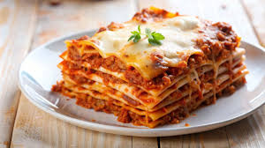
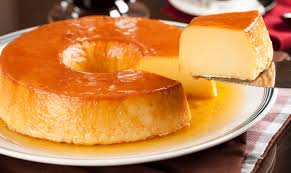
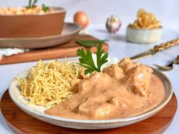

Lasanha é tanto um tipo de massa alimentícia formada por fitas largas, como também um prato, por vezes chamado lasanha ao forno, feito com essas fitas colocadas em camadas, e entremeadas com recheio e molho.

Na Grã-Bretanha e em alguns países da Commonwealth, pudding é uma denominação genérica para sobremesa. Pudim é a denominação genérica de dois tipos de alimentos. Saber qual desses dois alimentos é considerado pudim varia entre diversas regiões geográficas.

A torta holandesa é uma sobremesa brasileira típica da culinária paulista, e consumida em todo o Brasil.

Estrogonofe é um prato originário da culinária russa composto de cubos de carne ou legumes, servidos num molho de creme de leite. Desde suas origens no século XIX, o prato popularizou-se em muitos países europeus, norte-americanos e no Brasil, sempre com variações consideráveis da receita original.